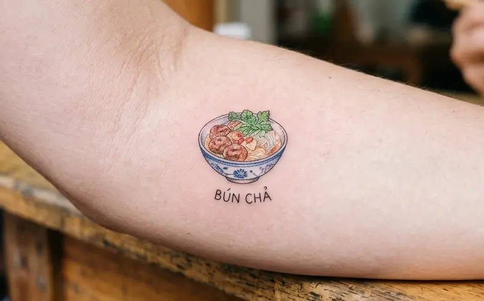

The Smell of Charcoal at Lunchtime
Walk through Hanoi around noon and you will smell it before you see it. Pork sizzles over glowing charcoal, and smoke curls through narrow alleys. Office workers and travelers squeeze onto low plastic stools, waiting for the same thing.
Bun cha is grilled pork served with soft white rice noodles, fresh herbs and a bowl of warm, sweet-sour-salty dipping sauce. According to the source article, National Geographic named it one of the world’s best street foods.
How to Eat It Like a Local
- Drop the noodles and herbs into the dipping sauce, or dip each bite.
- Add chili, garlic or pickled papaya to taste.
- Order a fried spring roll (nem rán) on the side.
- Try a fresh kumquat drink afterward to refresh your mouth.
14 Bun Cha Places Worth Your Appetite
Prices are per portion in VND and are approximate. Hours can change, so check before you go.
Old Quarter and Hoan Kiem
1. Bún Chả Tuyết – 34 Hàng Than. 8:30–17:30 | 35k–55k. A long-running family recipe with three kinds of grilled pork: minced patties, sliced pork and lá lốt rolls.

2. Bún Chả 41 – 41 Cửa Đông. 10:30–20:00 | 20k–50k. Generous portions. Arrive early because tables fill fast.

3. Bún Chả Ngõ 74 – 74 Hàng Quạt alley. 10:00–14:00 | 20k–45k. Tender, charred pork with a crisp skin. Pair it with a cold kumquat drink.

4. Bún Chả 48 Hàng Khoai – 48 Hàng Khoai. 6:00–15:00 | 35k–55k. A neighborhood favorite with an old-school, warm dipping sauce.

5. Bún Chả Đắc Kim – 1 Hàng Mành (and other branches). 20k–150k. Known for crunchy spring rolls and bold, rich sauce.

6. Bún Chả Ta (Michelin Bib Gourmand 2024) – 21 Nguyễn Hữu Huân. 8:00–22:00 | 60k–110k. Thick meatballs, tender grilled pork and a balanced sauce. Pork, crab or seafood spring rolls are on the menu.

7. ÔBunCha – 46 Nguyễn Hữu Huân (more branches). 45k–70k. Bamboo trays and Bát Tràng ceramics. The dipping sauce is made with Phú Quốc fish sauce.

Hai Ba Trung and Hanoi’s Neighborhood Favorites
8. Bún Chả Hương Liên – 24 Lê Văn Hưu. 10:00–19:00 | 40k–60k. Famous as the place where former U.S. President Obama ate bun cha. Try the crab or seafood spring rolls.

9. Bún Chả Quê – 15 Bà Triệu alley. 7:30–15:00 | 35k–45k. A small, busy spot with golden pork and quick, friendly service.

10. Bún Chả Que Tre Bình Chung – 299 Bạch Mai (more branches). 9:00–15:00, 17:00–21:00 | 35k–50k. Grilled pork wrapped around bamboo sticks, plus a light dipping sauce.

11. Bún Chả Mai Hắc Đế – 114 Mai Hắc Đế. 9:00–21:00 | 40k–50k. Large, tender minced pork patties with a lightly charred crust.

12. Bún Chả Chan (Michelin Bib Gourmand 2026) – Mai Hắc Đế Street. About 60k. A bun cha chan style with broth simmered from bones overnight, so the sauce tastes naturally sweet.

13. Bún Chả Cô Phương – 42 Bùi Ngọc Dương alley. 7:30–14:00 | About 35k. Nearly 30 years of local loyalty. The sauce is kept warm, and the herbs include crisp split morning glory.

14. Bún Chả 89 Tuệ Tĩnh – 89 Tuệ Tĩnh. 35k–50k. A lunch favorite with a clean, simple setup and quick service.

Take Hanoi Home on Your Skin
Some meals you forget. Others become a story: the smoke, the stools, the stranger who showed you how to dip.
At Mr Tattoo Hanoi Studio, in the heart of the Old Quarter, we help travelers turn moments like that into a small, personal keepsake.

Bun cha tattoo ideas:
- Chopsticks over a bowl of bun cha in fine-line
- Rising charcoal smoke in soft blackwork
- A tiny chili and herbs design
- A conical hat or Hanoi skyline with your travel date
What we offer:
- Custom, original designs made for you
- Traditional Vietnamese motifs and Asian-inspired art
- Fine-line and blackwork styles
- Travel memory tattoos
Small tattoos start from just $10.
Book Your Tattoo
- Website: mrtattoo.vn (see our contact page)
- Hotline / WhatsApp: +84 377 616 886
Message us your idea, and we will help you design something you will love.
Eat well. Explore deeply. Take Hanoi home with you.